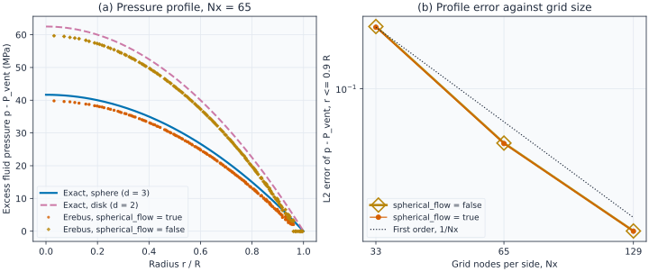
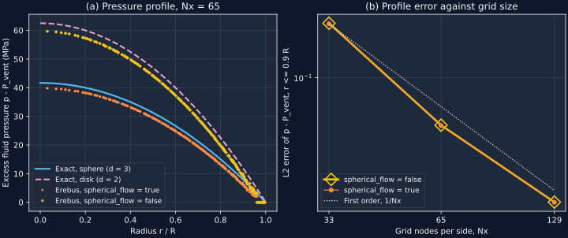
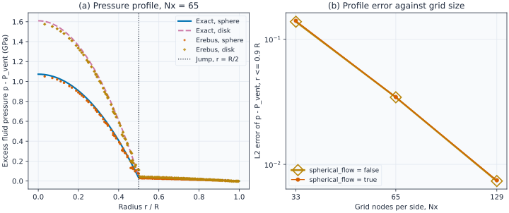
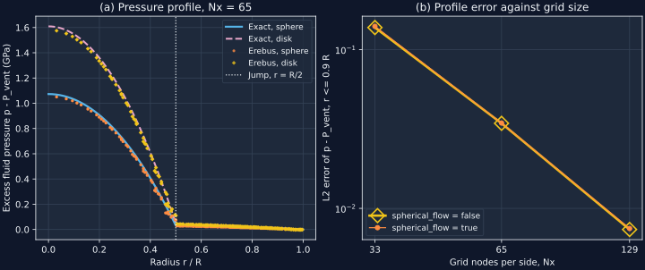

Spherical Darcy Flow
What this page checks
This page checks the interior Darcy solve of Erebus.jl. This solve gives the fluid pressure and the Darcy flux in a porous sphere. The Darcy flux is the volume of fluid that flows through a unit area of rock per unit time, in m/s. The page also checks the face weights of the fluid continuity rows. It also checks that the vented rate from the venting rows equals the produced rate. Validation here means that we run the code on a case where we know the right answer from another source. The test then checks that the code gives that answer. If this part were wrong, the fluid pressures and fluxes would be wrong. The venting, the fracturing and the loss of volatiles that depend on pressure would then be wrong too.
The page checks 2 cases:
- a rock with a uniform permeability (case 1);
- a rock with a core whose permeability is 100 times lower than that of the shell (case 2).
Each case below says why the check exists, what it tests, how we know the right answer and why it matters. The box "Test details" at the end of each case gives the reference, the tolerance, the test ids and the command.
How the option enters the fluid continuity rows. The fluid continuity row of a cell is the row of the linear system that holds the balance of fluid volume in that cell. In the cases of this page, the fluid that flows out of a cell equals the fluid that the cell produces:
\[\nabla \cdot \mathbf{q} = S, \qquad \mathbf{q} = -\frac{k}{\mu} \nabla p.\]
Here $\mathbf{q}$ is the Darcy flux in m/s and $S$ the fluid source, the fluid volume produced per unit rock volume and time, in 1/s. The fluid pressure is $p$ in Pa, the permeability $k$ in m² and the fluid viscosity $\mu$ in Pa s. The code solves a 2-D grid. The option geometry.spherical_flow gives the continuity rows of the fluid the face weights of a sphere. With these weights the 2-D grid behaves like a 3-D sphere. A face weight is a factor on the flux through a cell face. The default is off, which gives a 2-D disk. With the option on, the row takes the divergence of a 2-D flow through a gap of width $w = 2r$, in m. Here $r$ is the distance from the centre in m. The weighted divergence is
\[\nabla_\mathrm{sph} \cdot \mathbf{q} = \frac{1}{w_P} \nabla_\mathrm{2D} \cdot (w \mathbf{q}).\]
Here $\nabla_\mathrm{2D} \cdot$ is the divergence in the 2 grid directions and $w_P$ the weight of the cell, in m. For a radial flux $q_r$, in m/s, this gives the divergence of a sphere, $\frac{1}{r^2} \partial_r (r^2 q_r)$, with $\partial_r = \partial / \partial r$.
How the code applies the face weights
Each of the 4 face terms of the fluid continuity row, the Darcy flux $q_x^D$ and $q_y^D$ in m/s, is multiplied by the dimensionless factor $m_F = w_F / w_P$, with $w_F$ the weight at the face position, in m. The factor 2 of $w$ cancels in $m_F$. The source term is volumetric and keeps its unweighted form. Discretization and Numerics gives the choice of the cell weight $w_P$ and the weights of the solid continuity rows.
The test set-up.
- The case uses a sphere of radius $R = 50$ km in a square box of 140 km.
Nxis the number of grid nodes on each side of the box.- In case 1 the rock has a uniform permeability $k = 10^{-13}$ m².
- The rock has a uniform porosity of 0.2.
- The fluid has a viscosity $\mu = 10^{-3}$ Pa s.
- The rock is rigid, and gravity is off.
- Every cell inside the sphere produces fluid at the same rate $S = 10^{-11}$ 1/s.
- The surface temperature is 200 K and the ambient pressure is $P_\mathrm{amb} = 100$ Pa.
- The ice vapour pressure at 200 K is lower than $P_\mathrm{amb}$, so the surface pressure is $P_\mathrm{vent} = P_\mathrm{amb} = 100$ Pa. The surface is held at this pressure.
- The case does not check the venting conductance, which sets how fast fluid leaves through the venting rows (see "Known limit" of case 1).
Case 1: the steady pressure of a sphere with a fluid source
Why this check exists. The face weights could have a wrong size. The Darcy matrix could give a wrong pressure or a wrong flux. The pressure in the centre of the sphere would then have the wrong size. With the option off, the centre excess pressure is 3/2 of the value of the sphere. Fluid that is lost between the cells and the venting rows shows up as a vented rate that differs from the produced rate.
What it tests. The case builds the state with init_simulation and sets the grid fields directly. Faces outside $r = R$ are impermeable. The venting conductance is much larger than the rock conductance, so that the surface pressure equals $P_\mathrm{vent} = P_\mathrm{amb}$. This is the Dirichlet limit. The case then calls solve_stokes_darcy! once, on timestep 1. We compare the excess pressure $p - P_\mathrm{amb}$ at the grid nodes with the exact solution. We do this for spherical_flow = true and for spherical_flow = false, at Nx = 33, 65 and 129. The profile error is the relative L2 error over the nodes with $r \le 0.9 R$:
\[\epsilon = \sqrt{\frac{\sum_i \left(\Delta p_i - \Delta p_i^\mathrm{exact}\right)^2}{\sum_i \left(\Delta p_i^\mathrm{exact}\right)^2}}, \qquad \Delta p = p - P_\mathrm{amb}.\]
We compare the Darcy flux with the exact flux $\mathbf{q} = S \mathbf{r} / d$ on the faces with $r \le 0.9 R$. Here $\mathbf{r}$, in m, points from the centre to the face, and $d$ is the number of dimensions of the exact solution below. The flux error $\epsilon_q$ is the relative L2 error over the stored flux components on those faces (see the box below).
How the flux error is computed
The grid stores the x component of the flux on the vertical faces and the y component on the horizontal faces. At each face the error is the stored component minus the same component of the exact flux. The flux error is the relative L2 error over all stored x components and all stored y components on the faces with $r \le 0.9 R$:
\[\epsilon_q = \sqrt{\frac{\sum_c \left(q_c - q_c^\mathrm{exact}\right)^2}{\sum_c \left(q_c^\mathrm{exact}\right)^2}}, \qquad q_c^\mathrm{exact} = \frac{S \, r_c}{d},\]
where $c$ runs over the stored components on the faces with $r \le 0.9 R$ and $r_c$ is the coordinate, in m, of the face that the component belongs to, measured from the centre (x for an x component, y for a y component). The error does not average the components of neighbouring faces.
We also compare the centre excess pressure with the option on and off. We compare the vented rate with the produced rate and the speed of the solid with zero.
How we know the right answer. Darcy's law and the balance of fluid volume give $\nabla^2 p = -\mu S / k$ inside the sphere, with $p = P_\mathrm{vent} = P_\mathrm{amb}$ at $r = R$. The solution of this equation in $d$ dimensions is
\[p - P_\mathrm{amb} = \frac{\mu S \left(R^2 - r^2\right)}{2 d k},\]
with $d = 3$ for spherical_flow = true and $d = 2$ for spherical_flow = false. The flux is radial with the size $S r / d$, because all fluid that the cells inside radius $r$ produce crosses the surface of radius $r$. Its components are $S x / d$ and $S y / d$ with $x$ and $y$ in m, measured from the centre. The centre values are $\mu S R^2 / (6 k)$ and $\mu S R^2 / (4 k)$, so the ratio of the sphere to the disk is exactly 2/3. All fluid that the cells produce leaves through the surface, so the vented rate equals the produced rate. The rock is rigid, so the solid speed is zero.
Why it matters. Every run with spherical_flow = true uses these face weights in the fluid continuity rows. This case checks them with the solver step alone. So a fault found here is a fault in the face weights or in the Darcy matrix. It also shows that the vented rate from the venting rows equals the produced rate. It does not show how the code vents fluid in general (see "Known limit").


How to read the plot. Panel (a) shows the excess pressure, in MPa, against the scaled radius $r / R$ at Nx = 65. The solid line is the exact solution for the sphere and the dashed line is the exact solution for the disk. The points are grid nodes: circles with the option on and diamonds with the option off. A pass means that the points with the option on follow the solid line and the points with the option off follow the dashed line. Panel (b) shows the L2 profile error against Nx on logarithmic axes, with a dotted line of first order. A pass means that the error stays below its limit and falls along the dotted line as the grid gets finer. The order between Nx = 65 and Nx = 129 is about 0.91 for both settings. The figure does not show the flux error, the centre ratio, the vented rate or the solid speed. The table at the end of the page gives them.
Known limit. The circular surface is a staircase of grid cells. This shifts the whole profile by a near-constant offset. The error is therefore first order and not second order. The test asserts limits on the L2 error and on the order, and not an exact match. The offset is nearly the same fraction of the centre value for both settings, so the centre ratio stays close to 2/3. The vented rate does not depend on the offset. The centre ratio and the vented rate are both tested to a tight tolerance. The flux error is tested against a limit at each grid. The case uses the Dirichlet limit, in which the venting conductance is much larger than the rock conductance. The surface pressure is then $P_\mathrm{amb}$ for any value of the venting conductance and of its face weight. The case therefore does not check the venting conductance or its face weight.
Test details
- Reference: exact solution, $\mu S (R^2 - r^2) / (2 d k)$, the exact flux $S \mathbf{r} / d$, the centre ratio 2/3, a vented rate equal to the produced rate, and a solid speed of zero.
- Tolerance:
- the L2 error: at most 0.20 at
Nx = 33, at most 0.08 atNx = 65and at most 0.05 atNx = 129; - the order of the error between
Nx = 65andNx = 129: 1 within 0.3; - the flux L2 error: at most 0.21 at
Nx = 33, at most 0.041 atNx = 65and at most 0.019 atNx = 129; - the centre ratio: 2/3 within 0.01;
- the vented rate: the produced rate within $10^{-8}$ of the rate;
- the solid speed: at most $10^{-12}$ m/s.
- the L2 error: at most 0.20 at
- Regression band: the allowed range around the recorded value is
PHYSICS_REGRESSION_BANDSinbenchmarks/validation_spherical_darcy_flow.jl. It is 0.005 on each L2 error of the pressure. It is 0.05 on each order. It is 0.008, 0.003 and 0.0015 on the flux error atNx = 33, 65 and 129. It is 0.002 on the centre ratio. It is $10^{-8}$ on each vented-rate closure and $10^{-12}$ m/s on the solid speed. - Test id:
profile_l2_inner_off_nx33,profile_l2_inner_off_nx65,profile_l2_inner_off_nx129,profile_l2_inner_on_nx33,profile_l2_inner_on_nx65,profile_l2_inner_on_nx129,profile_order_off_65_129,profile_order_on_65_129,centre_ratio_on_off_nx65,flux_l2_inner_off_nx33,flux_l2_inner_off_nx65,flux_l2_inner_off_nx129,flux_l2_inner_on_nx33,flux_l2_inner_on_nx65,flux_l2_inner_on_nx129,vent_closure_off_nx65,vent_closure_on_nx65,solid_speed_max_nx65. Aflux_l2_innervalue is the relative L2 vector error $\epsilon_q$. Avent_closurevalue is the absolute difference between the ratio of the vented to the produced rate and 1. - Command:
julia --project=. tools/check_validation.jl --check.
Case 2: the steady pressure of a sphere with a low-permeability core
Why this check exists. In a real body the permeability changes with depth. Where the permeability jumps, the solver must carry the same flux through the jump, and the pressure must stay continuous. The solver could read a resistance from the wrong face, or use a wrong face weight. Either fault gives a wrong pressure in the core or a wrong flux.
What it tests. The case is case 1 with one change. The core $r < a = R/2$ has the permeability $k_\mathrm{core} = 10^{-15}$ m², and the shell $a \le r \le R$ keeps $k = 10^{-13}$ m². Here $a$ is the radius of the core in m. The case sets the face resistances directly. The resistance $\mu / k$, in Pa s/m², of a face between 2 nodes is the mean of the 2 node values. We compare the excess pressure with the exact solution at Nx = 33, 65 and 129, for both settings, with the profile error $\epsilon$ of case 1. The flux error $\epsilon_q$ leaves out the faces at most 2 cells from $r = a$, because there the faces cut the circle $r = a$ as a staircase. We also compare the centre excess pressure with the option on and off. At Nx = 33 we compare the pressure and the flux of the 6-variable and the 4-variable solver paths on all faces. The 2 solver paths solve the same system with 6 unknowns per node or with 4 (solver.darcy_elimination = false or true).
How we know the right answer. The flux is the same as in case 1, $S r / d$, because it depends only on the fluid that the cells inside radius $r$ produce. Darcy's law then gives the pressure gradient $\mu S r / (d k)$, with the $k$ of the layer. With $p = P_\mathrm{amb}$ at $r = R$ and a continuous pressure at $r = a$, the exact solution is
\[p - P_\mathrm{amb} = \begin{cases} \dfrac{\mu S \left(R^2 - r^2\right)}{2 d k}, & a \le r \le R, \\[2ex] \dfrac{\mu S \left(R^2 - a^2\right)}{2 d k} + \dfrac{\mu S \left(a^2 - r^2\right)}{2 d k_\mathrm{core}}, & r < a. \end{cases}\]
Both terms are proportional to $1/d$, so the ratio of the centre values of the sphere and the disk is again exactly 2/3.
Why it matters. The permeability of a planetesimal changes with porosity, temperature and alteration. In this case the permeability changes by a factor of 100 at a curved surface. This case checks that the continuity rows with the face weights of the sphere keep the exact solution there.


How to read the plot. Panel (a) shows the excess pressure, in GPa, against the scaled radius $r / R$ at Nx = 65. The solid line is the exact solution for the sphere and the dashed line is the exact solution for the disk. The dotted vertical line is the jump at $r = a$. The points are grid nodes: circles with the option on and diamonds with the option off. A pass means that the points with the option on follow the solid line, also in the core. The points with the option off must follow the dashed line, also in the core. Panel (b) shows the L2 profile error against Nx on logarithmic axes. A pass means that the error stays below its limit at each grid.
Known limit. The jump surface $r = a$ is a staircase of grid cells, as the outer surface is. The error therefore depends on how the grid cuts the circle $r = a$, and it does not fall at a fixed order. With the option on, it is 0.025 at Nx = 63 and 0.034 at Nx = 65. So the finer grid has the larger error, and the test checks this. The test therefore asserts a limit at each grid and no order. The flux error leaves out the faces at most 2 cells from $r = a$. The comparison of the 6-variable and the 4-variable solver paths includes these faces. The case sets the face resistances directly, so it does not test how the code computes them from the markers. Markers are the material points that carry the rock properties.
Test details
- Reference: exact solution above, the exact flux $S \mathbf{r} / d$, and the centre ratio 2/3.
- Tolerance:
- the L2 error: at most 0.20 at
Nx = 33, at most 0.08 atNx = 65and at most 0.05 atNx = 129; - the flux L2 error: at most 0.041 at
Nx = 65and at most 0.019 atNx = 129; - the centre ratio: 2/3 within 0.01.
- the L2 error: at most 0.20 at
- Regression band: the allowed range around the recorded value is
PHYSICS_REGRESSION_BANDSinbenchmarks/validation_spherical_darcy_flow.jl. It is 0.005 on each L2 error of the pressure. It is 0.003 and 0.0015 on the flux error atNx = 65and 129. It is 0.002 on the centre ratio. - Test id:
profile_l2_inner_jump_off_nx33,profile_l2_inner_jump_off_nx65,profile_l2_inner_jump_off_nx129,profile_l2_inner_jump_on_nx33,profile_l2_inner_jump_on_nx65,profile_l2_inner_jump_on_nx129,centre_ratio_jump_on_off_nx65,flux_l2_inner_jump_off_nx65,flux_l2_inner_jump_off_nx129,flux_l2_inner_jump_on_nx65,flux_l2_inner_jump_on_nx129. - Command:
julia --project=. tools/check_validation.jl --check.
All recorded values
The table comes from the record and must match it. To make the figure again, run these 2 commands from the repository root:
julia --project=. scripts/export_validation_darcy_flow_data.jl <data_dir>
python3 scripts/generate_validation_darcy_flow_figures.py <data_dir>The second command needs NumPy and Matplotlib.
Validation record: benchmarks/records/spherical_darcy_flow.toml (Source commit b80632a7, config SHA-256 1ebd6ad20a14)
| Case | Metric | Grid Nx | Measured | Reference | Tolerance | Units | Status |
|---|---|---|---|---|---|---|---|
profile | Excess pressure L2 relative error for r <= 0.9 R, 2-D disk (Nx=33) | 33 | 1.5610e-01 | 0.0000e+00 | <= 2.00e-01 | dimensionless | PASS |
profile | Excess pressure L2 relative error for r <= 0.9 R, 2-D disk (Nx=65) | 65 | 6.7716e-02 | 0.0000e+00 | <= 8.00e-02 | dimensionless | PASS |
profile | Excess pressure L2 relative error for r <= 0.9 R, 2-D disk (Nx=129) | 129 | 3.6074e-02 | 0.0000e+00 | <= 5.00e-02 | dimensionless | PASS |
profile | Excess pressure L2 relative error for r <= 0.9 R, 3-D sphere (Nx=33) | 33 | 1.5536e-01 | 0.0000e+00 | <= 2.00e-01 | dimensionless | PASS |
profile | Excess pressure L2 relative error for r <= 0.9 R, 3-D sphere (Nx=65) | 65 | 6.7519e-02 | 0.0000e+00 | <= 8.00e-02 | dimensionless | PASS |
profile | Excess pressure L2 relative error for r <= 0.9 R, 3-D sphere (Nx=129) | 129 | 3.6027e-02 | 0.0000e+00 | <= 5.00e-02 | dimensionless | PASS |
profile | Convergence order log2(L2(Nx=65) / L2(Nx=129)), 2-D disk | 129 | 9.0854e-01 | 1.0000e+00 | atol=3.00e-01, rtol=0.00e+00 | dimensionless | PASS |
profile | Convergence order log2(L2(Nx=65) / L2(Nx=129)), 3-D sphere | 129 | 9.0623e-01 | 1.0000e+00 | atol=3.00e-01, rtol=0.00e+00 | dimensionless | PASS |
profile | Centre excess pressure ratio, sphere to disk (Nx=65) | 65 | 6.6676e-01 | 6.6667e-01 | atol=1.00e-02, rtol=0.00e+00 | dimensionless | PASS |
flux | Darcy flux L2 relative vector error for r <= 0.9 R, 2-D disk (Nx=33) | 33 | 9.8930e-02 | 0.0000e+00 | <= 2.10e-01 | dimensionless | PASS |
flux | Darcy flux L2 relative vector error for r <= 0.9 R, 2-D disk (Nx=65) | 65 | 1.9440e-02 | 0.0000e+00 | <= 4.10e-02 | dimensionless | PASS |
flux | Darcy flux L2 relative vector error for r <= 0.9 R, 2-D disk (Nx=129) | 129 | 8.8214e-03 | 0.0000e+00 | <= 1.90e-02 | dimensionless | PASS |
flux | Darcy flux L2 relative vector error for r <= 0.9 R, 3-D sphere (Nx=33) | 33 | 1.0111e-01 | 0.0000e+00 | <= 2.10e-01 | dimensionless | PASS |
flux | Darcy flux L2 relative vector error for r <= 0.9 R, 3-D sphere (Nx=65) | 65 | 2.0182e-02 | 0.0000e+00 | <= 4.10e-02 | dimensionless | PASS |
flux | Darcy flux L2 relative vector error for r <= 0.9 R, 3-D sphere (Nx=129) | 129 | 9.2389e-03 | 0.0000e+00 | <= 1.90e-02 | dimensionless | PASS |
closure | Vented to produced fluid rate, abs(ratio - 1), 2-D disk (Nx=65) | 65 | 7.1170e-11 | 0.0000e+00 | <= 1.00e-08 | dimensionless | PASS |
closure | Vented to produced fluid rate, abs(ratio - 1), 3-D sphere (Nx=65) | 65 | 3.7067e-11 | 0.0000e+00 | <= 1.00e-08 | dimensionless | PASS |
closure | Largest solid velocity component, both settings (Nx=65) | 65 | 1.9465e-17 | 0.0000e+00 | <= 1.00e-12 | m/s | PASS |
jump | Permeability jump: excess pressure L2 relative error for r <= 0.9 R, 2-D disk (Nx=33) | 33 | 1.3780e-01 | 0.0000e+00 | <= 2.00e-01 | dimensionless | PASS |
jump | Permeability jump: excess pressure L2 relative error for r <= 0.9 R, 2-D disk (Nx=65) | 65 | 3.4339e-02 | 0.0000e+00 | <= 8.00e-02 | dimensionless | PASS |
jump | Permeability jump: excess pressure L2 relative error for r <= 0.9 R, 2-D disk (Nx=129) | 129 | 7.3619e-03 | 0.0000e+00 | <= 5.00e-02 | dimensionless | PASS |
jump | Permeability jump: excess pressure L2 relative error for r <= 0.9 R, 3-D sphere (Nx=33) | 33 | 1.4024e-01 | 0.0000e+00 | <= 2.00e-01 | dimensionless | PASS |
jump | Permeability jump: excess pressure L2 relative error for r <= 0.9 R, 3-D sphere (Nx=65) | 65 | 3.4496e-02 | 0.0000e+00 | <= 8.00e-02 | dimensionless | PASS |
jump | Permeability jump: excess pressure L2 relative error for r <= 0.9 R, 3-D sphere (Nx=129) | 129 | 7.4665e-03 | 0.0000e+00 | <= 5.00e-02 | dimensionless | PASS |
jump | Permeability jump: centre excess pressure ratio, sphere to disk (Nx=65) | 65 | 6.6690e-01 | 6.6667e-01 | atol=1.00e-02, rtol=0.00e+00 | dimensionless | PASS |
jump | Permeability jump: Darcy flux L2 relative vector error for r <= 0.9 R and abs(r - a) > 2 dx, 2-D disk (Nx=65) | 65 | 2.4220e-02 | 0.0000e+00 | <= 4.10e-02 | dimensionless | PASS |
jump | Permeability jump: Darcy flux L2 relative vector error for r <= 0.9 R and abs(r - a) > 2 dx, 2-D disk (Nx=129) | 129 | 1.2508e-02 | 0.0000e+00 | <= 1.90e-02 | dimensionless | PASS |
jump | Permeability jump: Darcy flux L2 relative vector error for r <= 0.9 R and abs(r - a) > 2 dx, 3-D sphere (Nx=65) | 65 | 2.4606e-02 | 0.0000e+00 | <= 4.10e-02 | dimensionless | PASS |
jump | Permeability jump: Darcy flux L2 relative vector error for r <= 0.9 R and abs(r - a) > 2 dx, 3-D sphere (Nx=129) | 129 | 1.2295e-02 | 0.0000e+00 | <= 1.90e-02 | dimensionless | PASS |